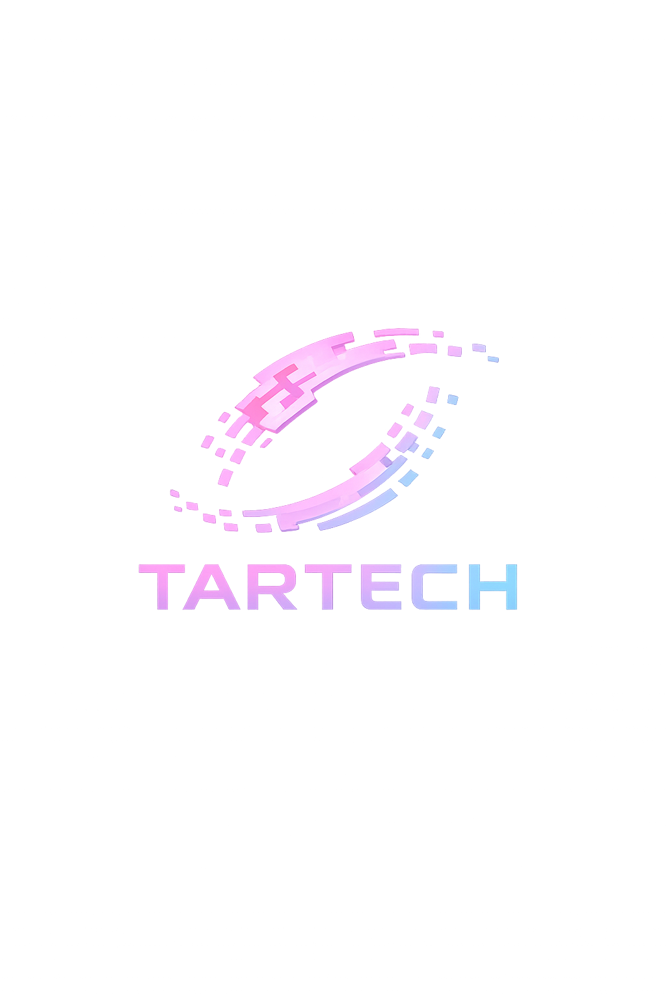
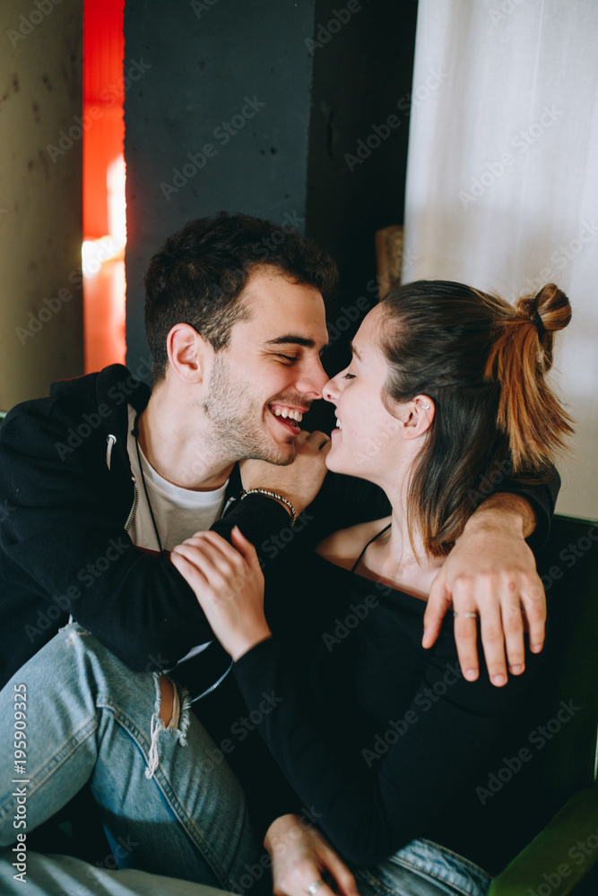
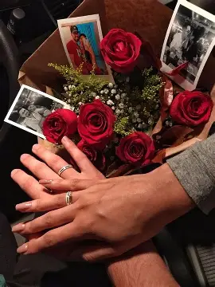

Troca de presentes
Escolha algo que seu parceiro(a) goste, seja um acessório, flores ou um item que ele(a) sempre quis. O presente deve mostrar atenção e carinho.

Inspire-se com dicas romanticas e comemore com muito carinho.
O Dia dos Namorados é uma oportunidade perfeita para demonstrar o amor e a gratidão pelos seus entes queridos. Acompanhe ideias criativas e sugestões para fazer a data inesquecível.
Escolha algo que seu parceiro(a) goste, seja um acessório, flores ou um item que ele(a) sempre quis. O presente deve mostrar atenção e carinho.
Prepare um jantar em casa com velas e música suave ou reserve um restaurante com ambiente agradável para um momento a dois.
Escreva uma carta sincera ou um cartão especial, destacando o que você sente e as memórias que mais valoriza ao lado da pessoa amada.
Planeje uma atividade que vocês possam fazer juntos, como um passeio, um piquenique, um filme ou uma aventura ao ar livre.
Pequenos gestos podem ser tão significativos quanto grandes surpresas. Um café da manhã especial, um abraço longo ou um bilhete deixado em um lugar inesperado reforçam o carinho.


O Dia dos Namorados é um momento para reforçar os laços afetivos, celebrar a parceria e demonstrar gratidão pelo amor compartilhado. A data pode ser comemorada de forma pessoal, simples ou criativa, desde que o foco seja o afeto.